Tangible Dial
2021
Master of Design · AHFE 2021
Tangible Dial is an integrated control interface with a detachable, shape-changing dial and digital displays. It explores how spatial references and sequential physical affordances can reduce cognitive effort when people move between interfaces on connected devices.
Research through Design
Interaction Design
Prototyping
Shape-changing tangible interface
Challenge
Distributed interfaces in cross-device interaction can increase cognitive load as people switch from one device to another. Physical affordances establish clear spatial references, but exposing every possible action at once can make a complex interface harder to understand.
The project asks how a tangible interface can communicate one possible action at a time while remaining connected to flexible digital content.
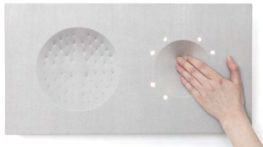
Sequential affordance
Each interaction step reveals the physical affordance needed for that moment and conceals actions that are not available.
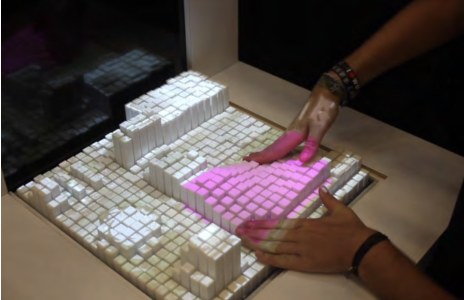
Process
The work combined literature research with two design phases. The first developed the product form and changing physical affordances; the second developed the interface architecture and graphical user experience.
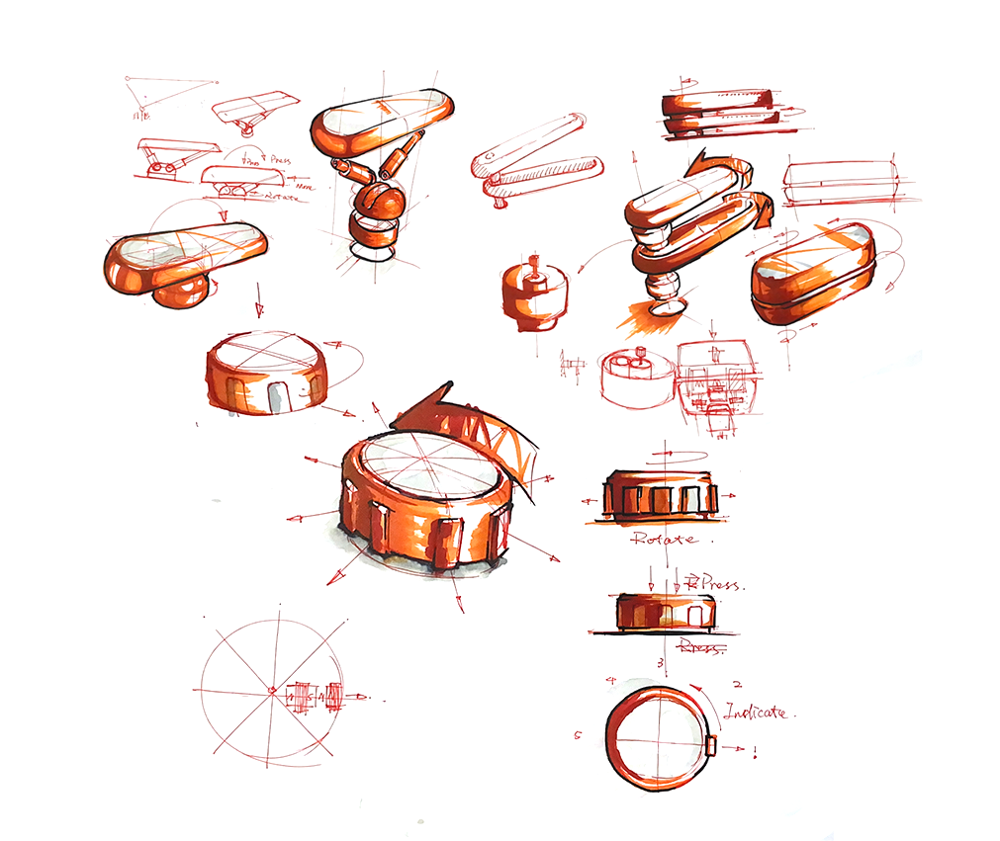
A dial form emerged through mechanism studies, sketching, and prototyping because pressing and rotating could be expressed through distinct changes around its edge.
Experience
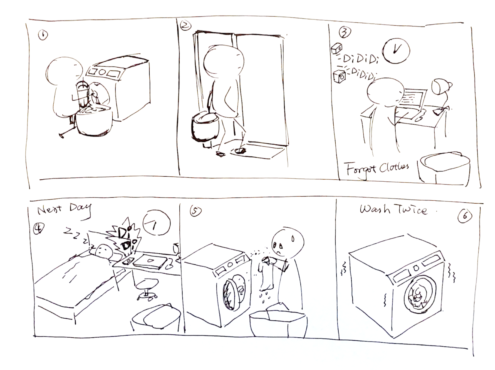
A washing machine provided a demanding connected-home scenario: its controls combine physical and digital components, require detailed multistep settings, and often run while people use other devices.
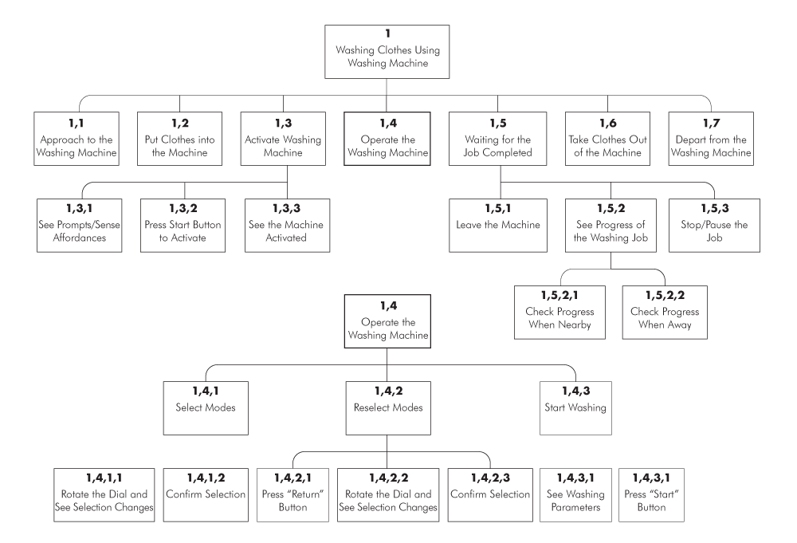
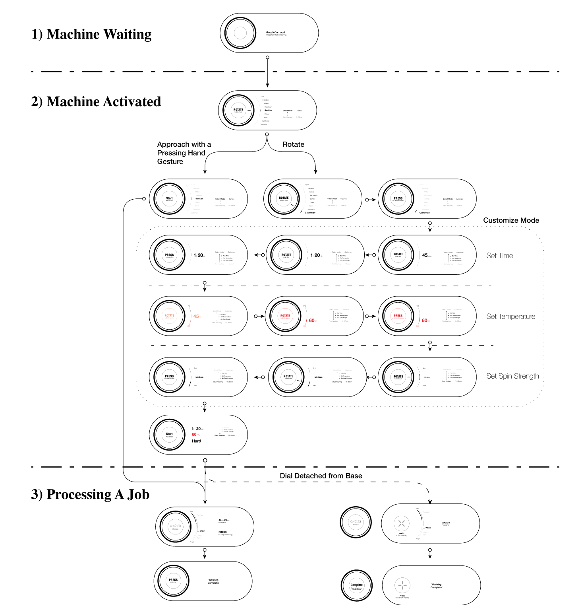
Prototype
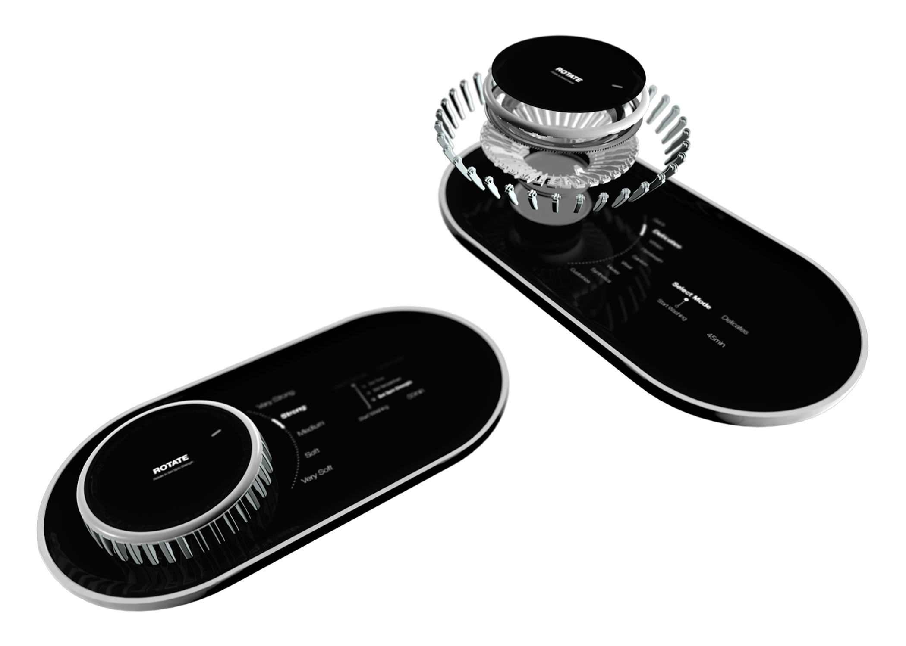
The final concept combines a detachable dial, a round top display, and a base display. Self-actuated ribs change the dial’s silhouette to communicate pressing or rotation.
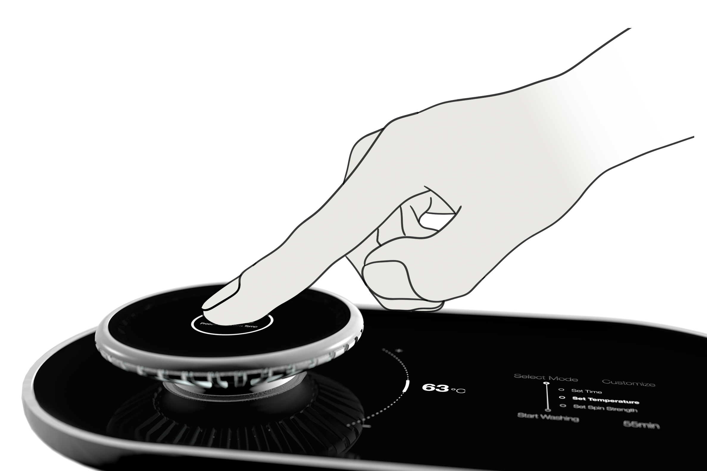
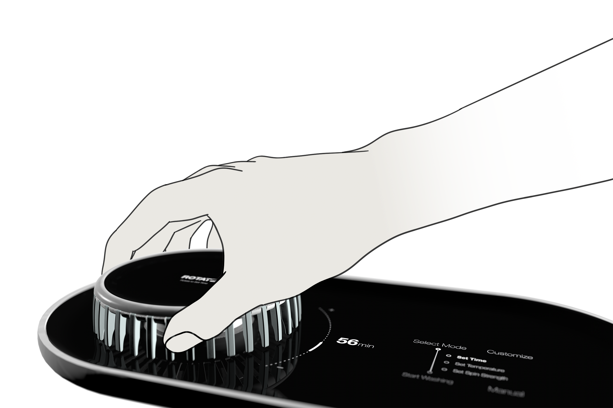
The base display separates a tangible area, a function area, and a procedure area so people can see previous choices, the current step, and suggested next actions.
Evaluation
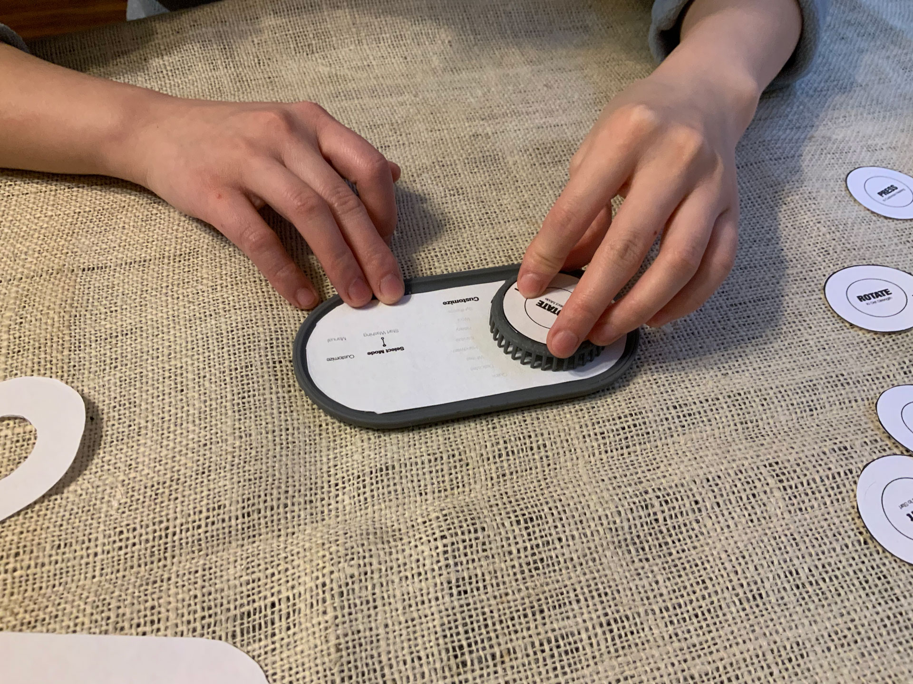
Two rounds of testing combined 3D-printed dial states with printed interface prototypes. The first round examined whether the physical forms communicated pressing and rotating; the second evaluated the complete tangible and graphical interaction.
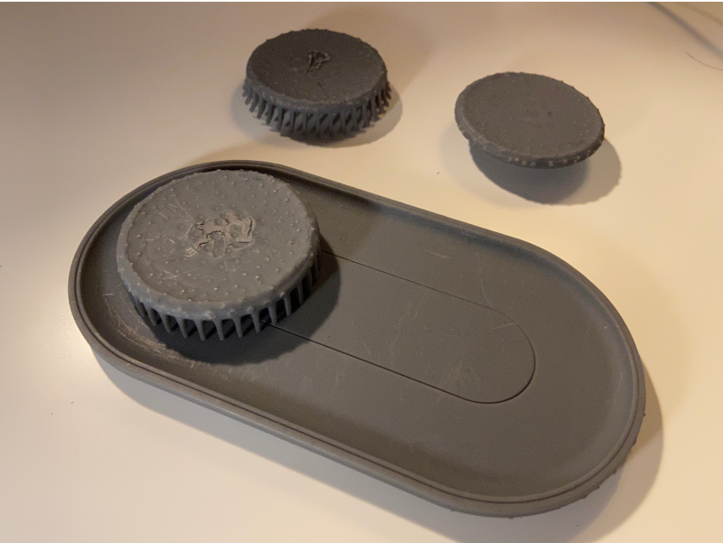
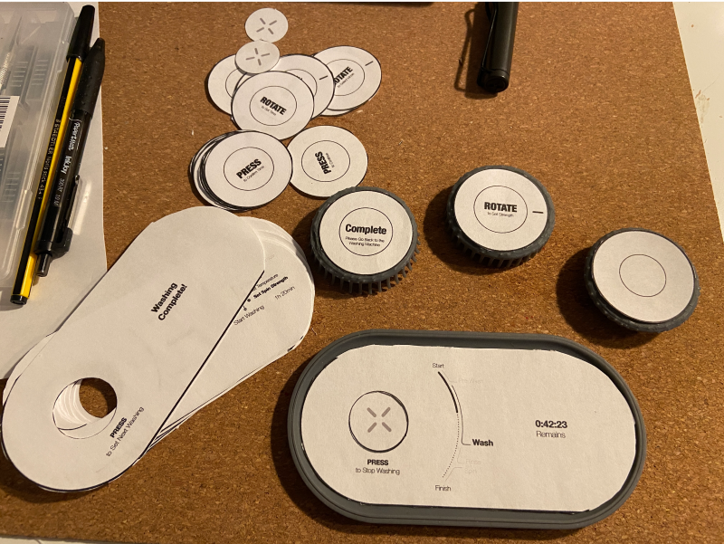
Participants found the graphical interface clear and reported that the changing ribs helped them understand relations between steps. Testing also revealed ambiguity around pressing and practical issues around the edge of the base.
Outcome
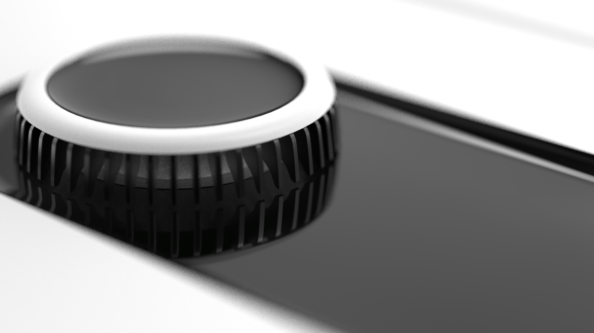
The study indicates that sequential physical affordances, paired with graphical guidance, can communicate complex interaction steps and support a clearer mental model across distributed devices.
Future work includes building an actuated prototype, exploring a broader vocabulary of changing physical cues, and applying the concept to vehicle interfaces or immersive systems.
Zhu, S., & Ghim, Y. G. (2021). Shape-Changing Control Interface Design: Augmenting Physical Affordances to Enhance a Digital Interface Experience in Cross-Device Interaction. AHFE 2021.